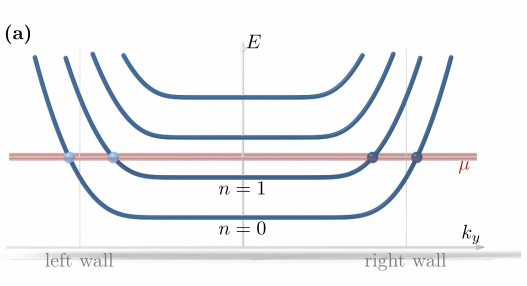

Advanced Quantum Materials 2027 · All lectures · Lecture notes
Session 3. Topological Band Structure Theory
3.6b The quantum Hall ribbon on the lattice
Let us look at a concrete model. We take a tight-binding square lattice with a perpendicular magnetic field and cut it into a ribbon of finite width, which has translational invariance along the ribbon but is finite across it. When we diagonalize this ribbon, we find the structure described above. There are flat bulk bands similar to Landau levels, and there are dispersive edge branches that cross the gap, with one branch confined to each edge and propagating in only one direction. If we look at the low-energy region close to zero energy, the spacing between the flat bands approaches the equal spacing of a continuum two-dimensional electron gas in a magnetic field, so the tight-binding model reproduces the standard Landau problem in the appropriate limit. This computed band structure, with the bulk flat bands in green and the two edge branches that propagate in opposite directions, is shown on the slides but was only described qualitatively in the lecture. To reproduce it numerically is what the notebook box below asks you to do.

In the spectrum of the ribbon the bulk Landau levels are flat. What does this say about the current carried by the bulk states?
Show the answers
- A. ✗ False
This is false. Compare the first and the fifth Landau level. Both are flat, so both have \(\partial E/\partial k=0\), and neither carries current although their energies differ by a factor of nine.
- B. ✓ True
This is true. The velocity along the ribbon is the slope of the band. A flat level has zero slope, so the current is carried only by the edge branches that cross the chemical potential.
- C. ✗ False
This is false. With the chemical potential in a gap, a voltage \(V\) between the edges gives the current \(C(e^2/h)V\) through the edge branches, which are the only states with a slope. The flat bulk levels have no slope and contribute nothing.
Notebook check-in: session3.ipynb, “From electrons in a ribbon to the quantum Hall state” (Core), “The quantum Hall effect in graphene” (Core), and “Localization of the edge states in the quantum Hall effect” (Challenge)
Build a square-lattice ribbon, and then a honeycomb-lattice ribbon, with a magnetic field and reproduce the figure described above, with flat Landau-level bulk bands and chiral edge branches. Check the propagation direction of the edge states at positive and at negative energy on each edge, which is the chirality argument of Section 3.6. Then look at how the edge states localize in real space as a function of energy, and how this localization changes for a weaker field or a narrower ribbon.
Try it. Change h.add_orbital_magnetic_field(0.01) to -0.01 and run the cell again. The color gives the position across the ribbon. Follow the branch that is localized at one edge and crosses zero energy. Its slope changes sign when the field is reversed, as in the figure of Section 3.6.